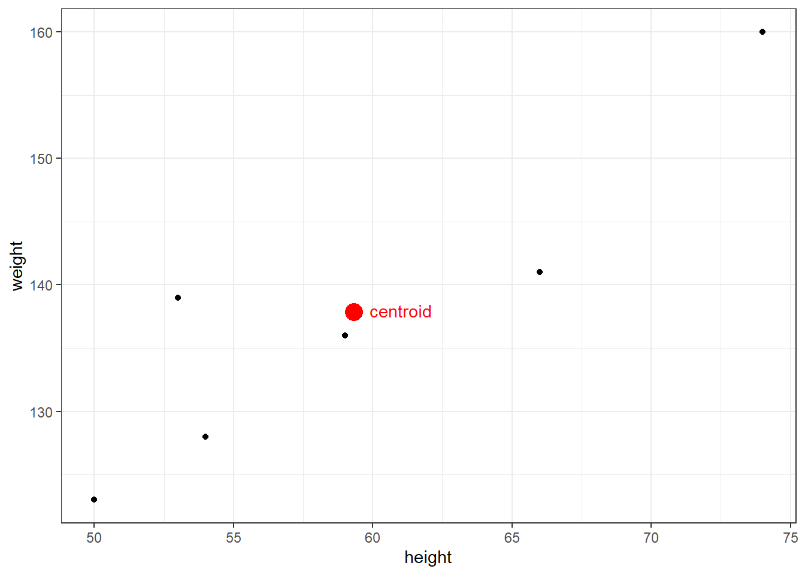
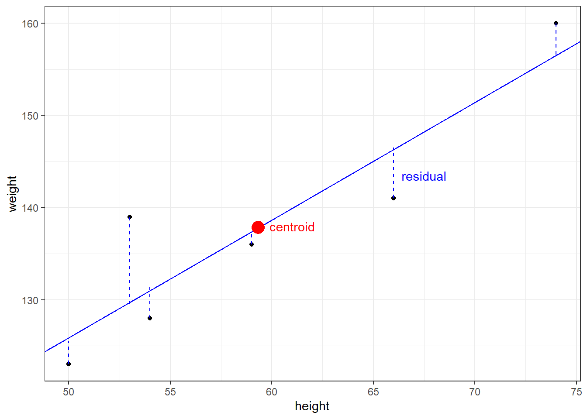
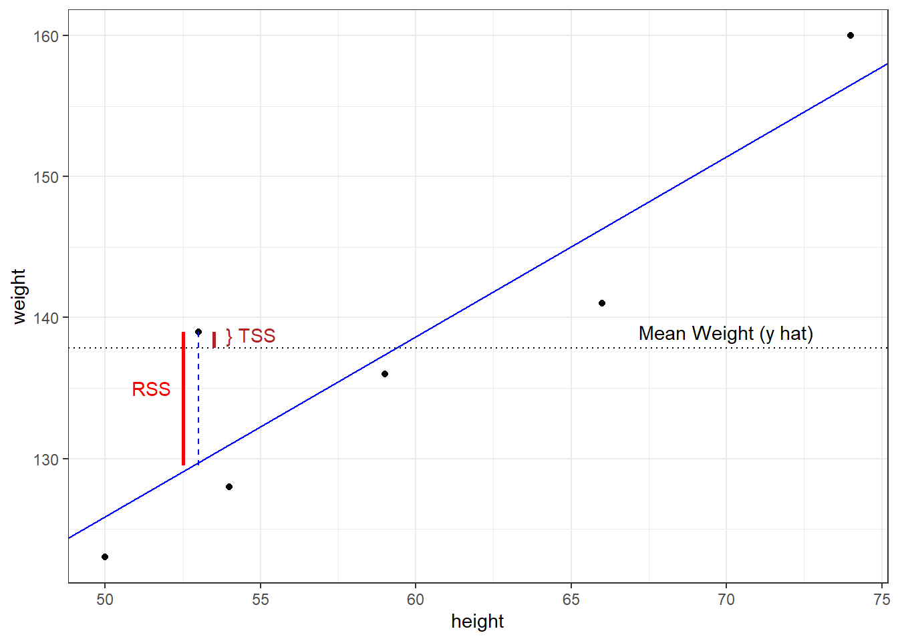
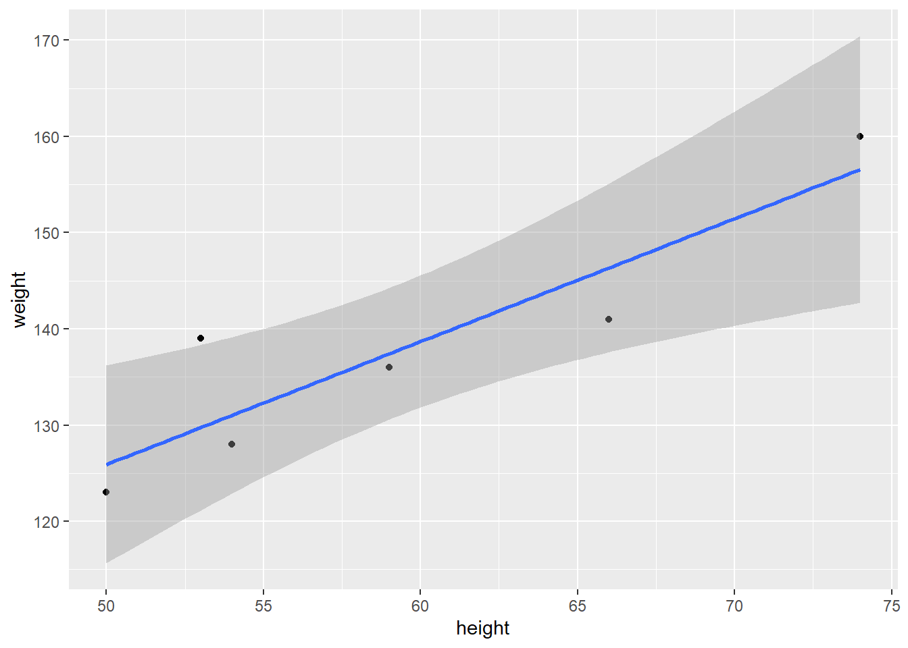

library(tidyverse)
library(GGally)
df = tibble(
height = c(66, 54, 50, 74, 59, 53),
weight = c(141, 128, 123, 160, 136, 139)
)Simple Linear Regression
The purpose of regression is to describe a relationship that explains one variable (the response, or the “y” variable) based on one or more other variables (the predictors, or the “x” variables). The simplest deterministic mathematical relationship between two variables \(x\) and \(y\) is a linear relationship, which we define as:
\[y = \beta_{0} + \beta_{1}x + \varepsilon\]
where,
- \(\beta_{0}\) is the y-intercept
- \(\beta_{1}\) is the slope
- \(\varepsilon\) is the error in \(y\) not explained by \(\beta_{0}\) and \(\beta_{1}\).
If there is no error in the model and a linear relationship exists, we could predict the true value of y given any value of x. With error, however, we can only estimate y, which we annotate by \(\hat{y}\). The regression line itself is determined using the least squares method, which involves drawing a line through the centroid of the data, and adjusting the slope until the squared distance between the straight line and each observed value (the residual) is minimized. For example, assume we have the following observations of height in inches (predictor) and weight in pounds (response).
Least Squares Method Manually
The centroid coordinates \((\bar{x},\bar{y})\) are calculated simply by \(\bar{x}\) = mean(df$height) = 59.33, and \(\bar{y}\) = mean(df$weight) = 137.83. Plotting the data with the centroid, we get:

To find the slope, \(\beta_{1}\), we calculate how much each height and weight observation deviate from the centroid, multiply those paired deviations, sum them, and divide that by the sums of the squared height deviations. With the height and weight data, we find:
df = df %>%
mutate(
h_dev = height - mean(height), # height deviation from centroid
w_dev = weight - mean(weight), # weight deviation from centroid
dev_prod = h_dev * w_dev, # the product of the deviations
h_dev_squared = h_dev^2 # the squared products
)| height | weight | height deviance | weight deviance | deviation products | height deviance squared |
|---|---|---|---|---|---|
| x | y | \(x_{i}-\bar{x}\) | \(y_{i}-\bar{y}\) | \((x_{i}-\bar{x})(y_{i}-\bar{y})\) | \((x_{i}-\bar{x})^{2}\) |
| 66 | 141 | 6.67 | 3.17 | 21.14 | 44.49 |
| 54 | 128 | -5.33 | -9.83 | 52.39 | 28.41 |
| 50 | 123 | -9.33 | -14.83 | 138.36 | 87.05 |
| 74 | 160 | 14.67 | 22.17 | 325.23 | 215.21 |
| 59 | 136 | -0.33 | -1.83 | 0.60 | 0.11 |
| 53 | 139 | -6.33 | 1.17 | -7.41 | 40.07 |
| \(\bar{x} = 59.33\) | \(\bar{y} = 137.83\) | - | - | \(\Sigma = 530.33\) | \(\Sigma = 415.33\) |
The slope is found by \(\beta_{1} = \frac{\Sigma (x_{i}-\bar{x})(y_{i}-\bar{y})}{\Sigma (x_{i}-\bar{x})^{2}} = \frac{530.33}{415.33} = 1.28\). For our dataset in R, that translates to:
beta1 = sum(df$dev_prod) / sum(df$h_dev_squared)
beta1[1] 1.276886We have now have what we need to calculate the y-intercept, \(\beta_{0} =\bar{y}-\beta{_1}\bar{x}\). Equivalently in R:
beta0 = mean(df$weight) - beta1 * mean(df$height)
beta0[1] 62.07143When we plot the line defined by our beta values, we find that it does, in fact, pass through the centroid and visually appears to fit the data.
ggplot(data=df, aes(x=height, y=weight)) +
geom_point() +
geom_abline(intercept=beta0, slope=beta1, color='blue') + # note the explicit use of our betas
#geom_smooth(formula=y~x, method="lm", se=FALSE) + # how it's normally done in practice
geom_point(data = centroid, aes(x=height, y=weight), color='red', size=5) +
annotate("text", x=61, y=138, label="centroid", color='red') +
annotate("text", x=67.5, y=143.5, label="residual", color='blue') +
annotate("segment", x=50, xend=50, y=123, yend=125.5, color='blue', linetype=2, size=0.5) +
annotate("segment", x=53, xend=53, y=139, yend=129.5, color='blue', linetype=2, size=0.5) +
annotate("segment", x=54, xend=54, y=128, yend=131.5, color='blue', linetype=2, size=0.5) +
annotate("segment", x=59, xend=59, y=136, yend=137.5, color='blue', linetype=2, size=0.5) +
annotate("segment", x=66, xend=66, y=141, yend=146.5, color='blue', linetype=2, size=0.5) +
annotate("segment", x=74, xend=74, y=160, yend=156.5, color='blue', linetype=2, size=0.5) +
theme_bw()
This method minimizes the residual sum of squares (RSS), which is represented mathematically by:
\[RSS = \sum\limits_{i=1}^{n}{(y_{i} - \hat{y}_{i})^2} = \sum\limits_{i=1}^{n}{\hat\varepsilon_{i}^{2}}\]
and is calculated as follows.
df = df %>% mutate(
y_hat = beta0 + beta1 * height,
error = weight - y_hat,
error_squared = error^2
)
print(paste("RSS =", round(sum(df$error_squared), 2)))[1] "RSS = 145.66"| height | weight | predicted weight | error | squared error |
|---|---|---|---|---|
| x | y | \(\hat{y}_{i}\) | \(y-\hat{y}_{i}\) | \((y-\hat{y}_{i})^2\) |
| 66 | 141 | 146.35 | -5.35 | 28.58 |
| 54 | 128 | 131.02 | -3.02 | 9.14 |
| 50 | 123 | 125.92 | -2.92 | 8.50 |
| 74 | 160 | 156.56 | 3.44 | 11.83 |
| 59 | 136 | 137.41 | -1.41 | 1.98 |
| 53 | 139 | 129.75 | 9.25 | 85.63 |
| \(\bar{x} = 59.33\) | \(\bar{y} = 137.83\) | - | - | \(RSS: \Sigma = 145.66\) |
Goodness of Fit
While RSS gives us an idea of how well the regression prediction (\(\hat{y}\)) can approximate the response (\(y\)), it does not tell us how well the model fits the data because it has the same units as \(y\). To obtain a unitless measure of fit, \(R^2\) (also called the coefficient of determination), RSS is divided by the total sum of squares (TSS), and that ratio is subtracted from 1.
\[R^2 = 1- \frac{RSS}{TSS} = 1 - \frac{\Sigma(y_{i} - \hat{y}_{i})^2}{\Sigma(y_{i} - \bar{y}_{i})^2}\]
We calculate \(R^2\) for the height/weight data as follows:
1 - sum(df$error_squared) / sum(df$w_dev^2)[1] 0.8229798We interpret \(R^2\) as the proportion of weight variation explained by the linear model. As a proportion, \(R^2\) varies from 0 to 1, and ideally we seek models with a high \(R^2\). A graphical depiction of RSS and TSS for one of the residuals illustrates their relationship.

Least Squares Method In R
That was a fair amount of work, and of course R simplifies the process. Fortunately, the syntax for creating a linear model is very similar to ANOVA.
df.lm = lm(weight ~ height, data=df)
summary(df.lm)
Call:
lm(formula = weight ~ height, data = df)
Residuals:
1 2 3 4 5 6
-5.346 -3.023 -2.916 3.439 -1.408 9.254
Coefficients:
Estimate Std. Error t value Pr(>|t|)
(Intercept) 62.0714 17.7405 3.499 0.0249 *
height 1.2769 0.2961 4.312 0.0125 *
---
Signif. codes: 0 '***' 0.001 '**' 0.01 '*' 0.05 '.' 0.1 ' ' 1
Residual standard error: 6.034 on 4 degrees of freedom
Multiple R-squared: 0.823, Adjusted R-squared: 0.7787
F-statistic: 18.6 on 1 and 4 DF, p-value: 0.01252Going through each section of the output from top to bottom:
Call: This is simply the formula we gave the lm() function.
Residuals: The residuals in order of observation.
Coefficients:
EstimateThese are the \(\beta\)s, and we see that they match our values calculated above.Std. Erroris the standard deviation of eachEstimate(or \(\beta\)) and can be used to determine the 95% confidence interval (CI). For example, the 95% CI forheightis \(1.28 \pm 1.96(0.296)\).t valueisEstimate/Std. Error.Pr(>|t|)is the probability of observing a value at least as extreme as \(\beta\) using a t-distribution and \((n-p-1)\) degrees of freedom. The null hypothesis is \(H_{o}: \beta_{i}=0\). Notice that this is a test of each individual predictor.
Residual standard error: The square root of RSS divided by the difference of number of observations and the number of predictors. Or, \(RSE = \sqrt{\frac{RSS}{n-p}}\). Degrees of freedom is \((n-p-1)\).
Multiple R-squared: The \(R^2\) we calculated above.
Adjusted R-squared:Normalizes \(R^2\) by accounting for the number of observations and predictors in the model. When conducting multiple linear regression, this is the appropriate method of measuring goodness of fit. Adjusted r-squared is calculated by: \(\bar{R}^{2} = 1 - (1 - R^{2}) \frac{n-1}{n-p-1}\).
F-statistic: The global test of significance where we wish to determine if at least one predictor is sginificant. The null hypothesis is \(H_{o}: \beta_{1}=...=\beta_{p-1}=0\) under the F-distribution with \(p-1\) and \(n-p-1\) degrees of freedom.
We interpret the linear model in the following manner: for every inch increase in height, we predict a person’s weight increases by 1.28 pounds.
R allows us to do several things with a model. We can use R to give us a confidence interval on our coefficients using confint:
confint(df.lm) 2.5 % 97.5 %
(Intercept) 12.8158877 111.326969
height 0.4547796 2.098992
Note
This is more precise than the Z estimation shown above as it accounts for our sample size and uses a t test.
We can also predict results using predict Predict can either give you a point estimate, or an interval based on either the mean predictions (using 'confidence') or a single point (using 'prediction'). You can read more about these options [here](http://www.sthda.com/english/articles/40-regression-analysis/166-predict-in-r-model-predictions-and-confidence-intervals/).
predict(df.lm, list(height = 66)) 1
146.3459 predict(df.lm, list(height = 66), interval = 'confidence') fit lwr upr
1 146.3459 137.5811 155.1108predict(df.lm, list(height = 66), interval = 'prediction') fit lwr upr
1 146.3459 127.4375 165.2544Note, R will not prevent one from extrapolating beyond the data. Predicting a result on values outside the observed data is bad practice and should generally be avoided.
Finally, one can plot the results and a regression quite simply with ggplot() using stat_smooth():
ggplot(data = df, aes(x = height, y = weight)) + # Provide your data and aesthetics as usual
geom_point() + # plot the observations
# geom_smooth creates a linear regression based on your given x and y values (i.e. lm(y~x))
# you can also plot the standard error
geom_smooth(method = 'lm', se = T, formula = "y ~ x") 